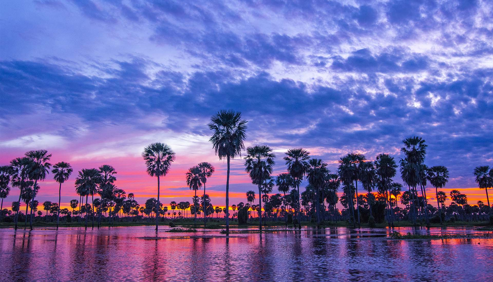
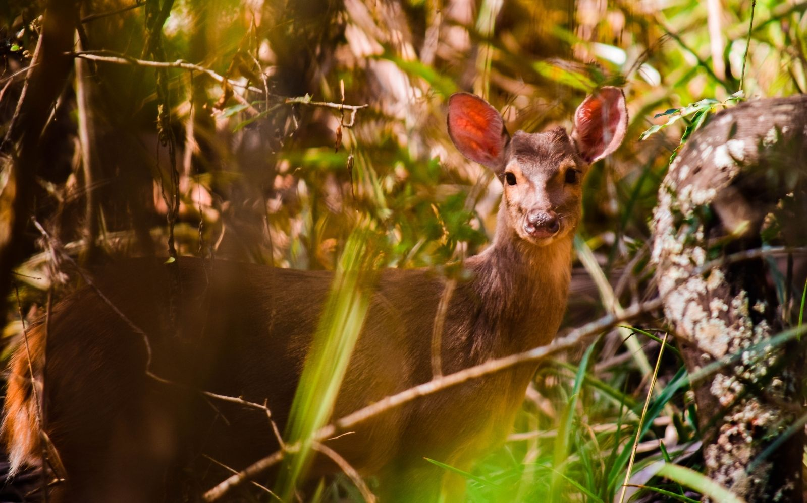
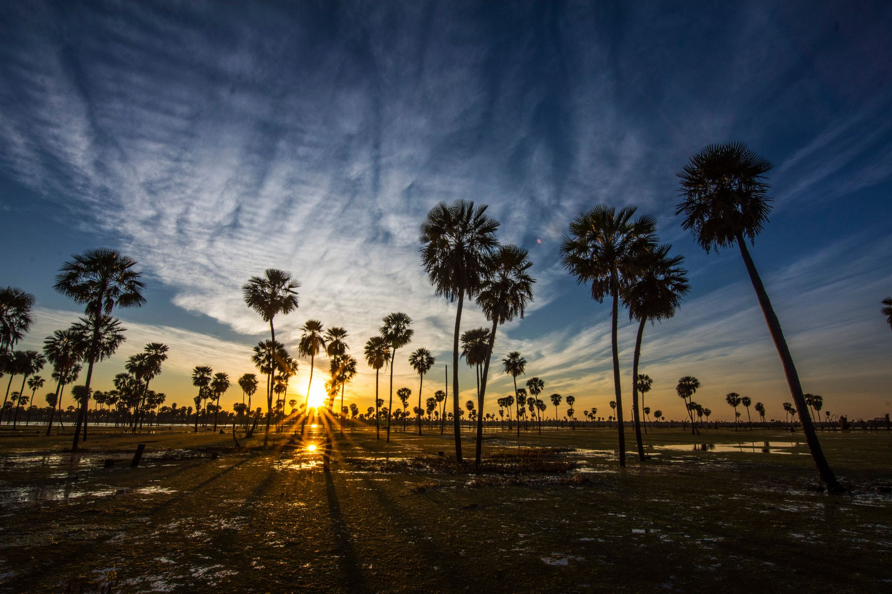
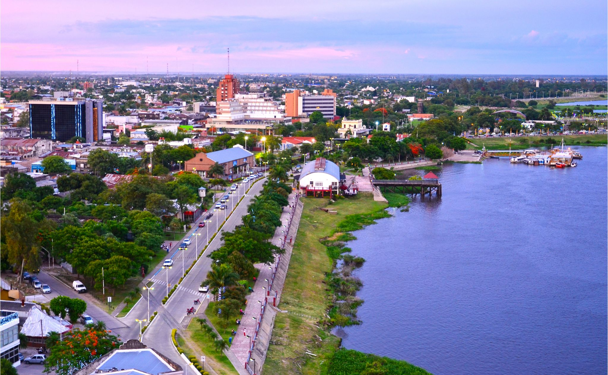
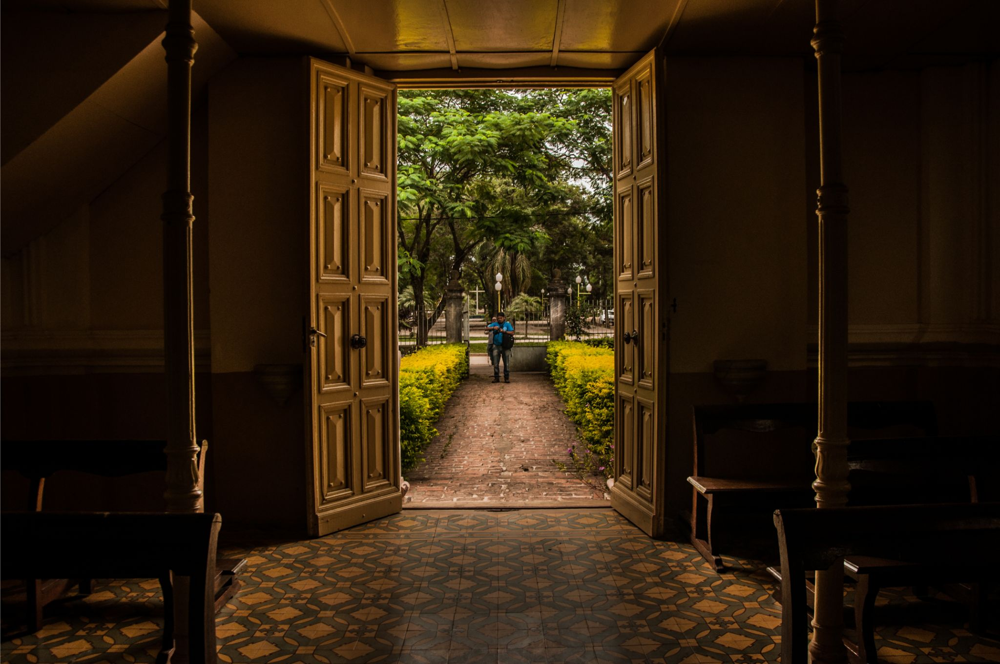
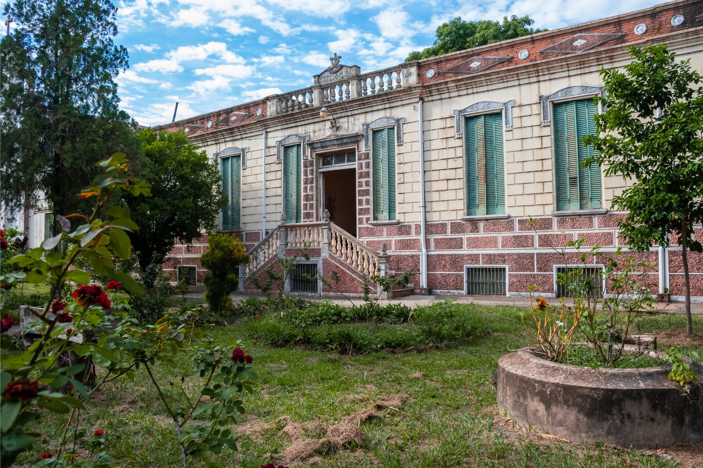
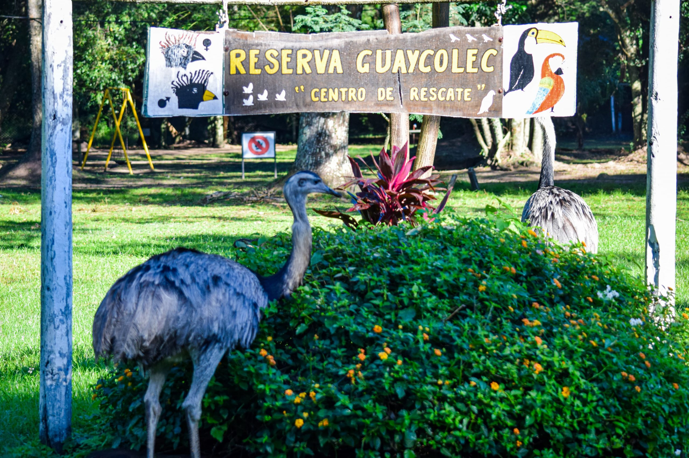
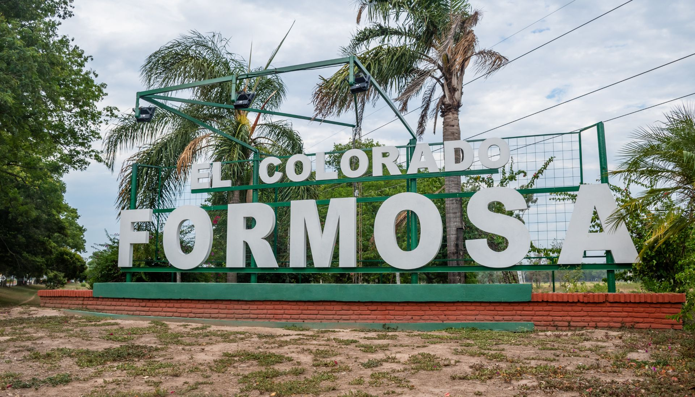

Formosa es hermosa

Formosa te sorprende
Formosa es una provincia joven, diversa, inclusiva y alegre. La variedad de nuestros paisajes naturales está determinada por la presencia del agua: su abundancia o su escasez. Los ríos, riachos, bañados y lagunas, conforman una diversidad de ecosistemas donde viven una gran variedad de especies vegetales y animales en muy buen estado de conservación. Formosa es un mosaico de ambientes naturales.
El formoseño es sencillo y alegre, amable y hospitalario; es fácil hacer amigos en Formosa. Los visitantes se quedan encantados con la calidez de nuestra gente y con las experiencias que viven durante su estadía. Se destacan los festivales populares, la movida nocturna y los encuentros para tomar mate o tereré (según la estación del año) en la gran variedad de espacios verdes recreativos que hay en cada localidad.
Formosa es Hermosa
Los primeros navegantes españoles que recorrieron el río Paraguay quedaron impactados con la belleza natural del lugar donde hoy se encuentra la ciudad de Formosa, por eso lo bautizaron “Vuelta Fermosa”, que significa “vuelta hermosa”.
Actualmente, los viajeros argentinos y extranjeros que se aventuran hacia destinos menos explorados, reviven esta experiencia cuando descubren la exuberancia natural de nuestros paisajes y la calidez de los formoseños; quedan sorprendidos, como aquellos primeros navegantes.
Formosa es hermosa también por su gente, por su sencillez y su alegría. Formosa es colorida, dinámica, en constante desarrollo. Formosa es cálida, hospitalaria, solidaria e inclusiva. Te invitamos a descubrir Formosa, porque sabemos que te va a encantar.

Lugares turisticos para conocer en Formosa
Bañado la estrella

Ciudad de Formosa

Misión Laishí

Misión Tacaaglé

Reserva Nacional Guaycolec

El Colorado
